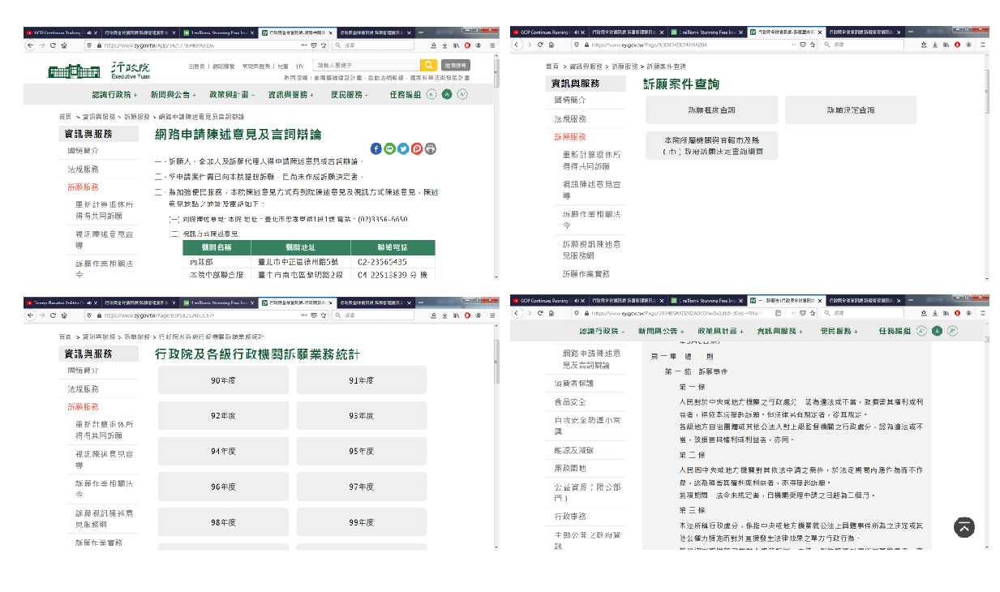

訴願系統
公其心，萬善出！
專案時間
2019. 07/15 - 2020. 1/02
使用工具
Adobe AI
Adobe PS
HTML5、CSS、JS
工作內容
Web UI Design
primary UX Research
網站簡介
人民對於已經決定的行政處份有所異議，可以在此提出訴願的請求，並且能夠查詢訴願的進度，除此之外，訴願的相關資訊(法律條文、委員會與範例等)也能在此一目了然。
問題點
一、導覽列缺乏統整
二、網路申請頁面無法預期，以及沒有引導作用
三、對於部分資訊架構階層太深，導致頁面需要不停跳轉
四、決定書、條文等冗長的內容缺少頁籤引導，對於閱讀上的不便

來源: 行政院 訴願系統
介面設計
先針對導覽列進行分類，解決資訊架構上的問題